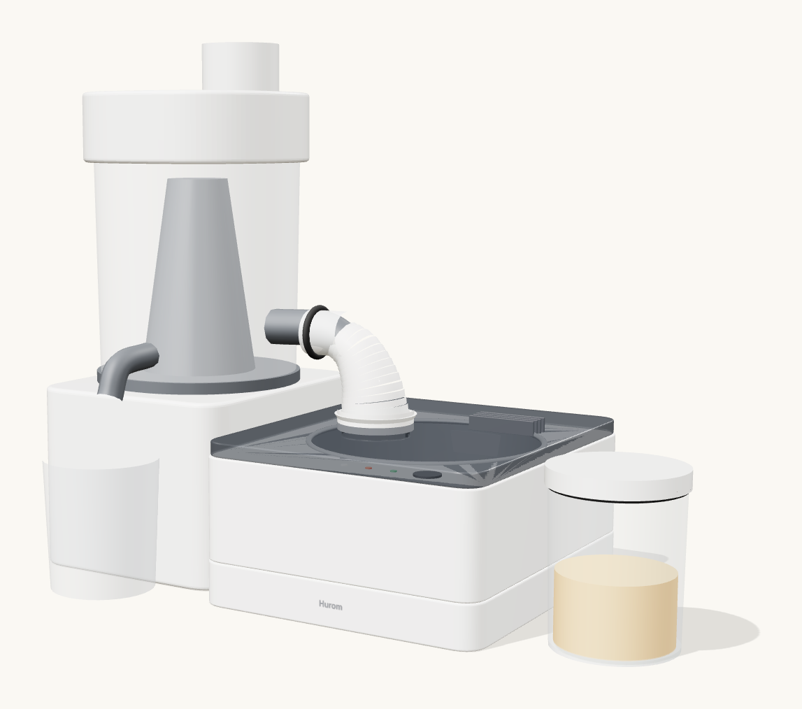
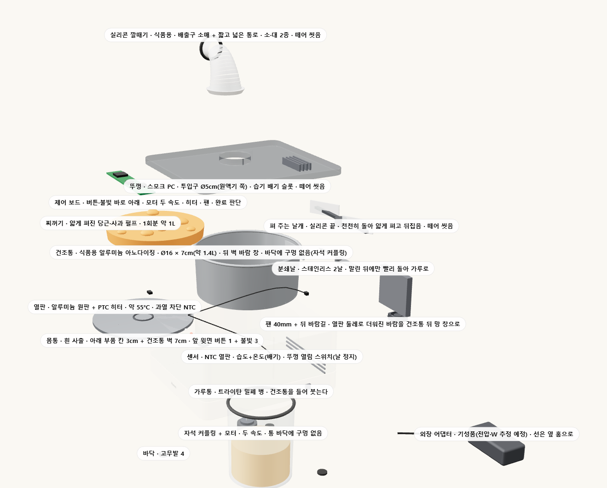

착즙이 끝나면 찌꺼기통은 늘 음식물 쓰레기통으로 갑니다. 펄프 도크는 찌꺼기통 자리에 놓이는 기계입니다. 원액기 배출구에 실리콘 깔때기를 끼우면 찌꺼기가 바로 도크로 떨어지고, 버튼 한 번에 약 55°C로 말려 가루로 만듭니다. 빵·부침개·스무디·이유식·반려동물 간식에 씁니다.
서늘고가 「사 온 재료를 지키고」, 해동기가 「얼려 둔 재료를 바로 쓰게」 한다면, 펄프 도크는 「짜고 남은 것까지 재료로 만드는」 제품입니다. 착즙 앞단이 아니라 착즙 뒤를 맡는 첫 제품이고, 휴롬 원액기가 있어야 쓸모가 있는 원액기 전용 주변기기입니다.
원액기 배출구에 끼운 실리콘 깔때기로 찌꺼기가 도크에 바로 떨어집니다. 착즙하는 몇 분 동안 천천히 도는 날개가 떨어진 찌꺼기를 옆으로 밀어 얇게 펴서 입구가 막히지 않게 합니다. 착즙이 끝나고 버튼을 누르면 열판(약 55°C) + 바람 + 휘젓기로 말리고, 다 마르면 같은 통 안에서 분쇄날이 빨리 돌아 가루로 만든 뒤 알립니다.
착즙 찌꺼기는 식이섬유 덩어리인데 거의 전부 버려집니다. 레시피(크래커·전)는 그날 다 써야 하고, 식품 건조기는 크고 6~12시간 걸리며 찌꺼기를 옮겨 담아 펴야 합니다. 그래서 아무도 안 합니다. 옮기지 않고, 펴지 않고, 받자마자 말리기 시작하게 만듭니다.
숫자 칸은 곽두팔이 채웁니다(원액기 모델별 배출구 치수 · 건조 시간 추정 · 식품용 실리콘 인증 · OEM 후보). 이 페이지의 치수는 3D를 그리기 위한 가정입니다.
| 위험 | 대응 |
|---|---|
| 「음식물처리기랑 뭐가 다르냐」 | 버리는 기계가 아니라 먹는 재료를 만드는 기계. 닿는 부품 전부 식품용, 55°C 저온, 가루통에 담아 먹는 데 씀. 겉모습도 원액기 식구로 |
| 말리는 시간이 길다 | 착즙과 분리해 「돌려 두고 잊는」 흐름으로. 얇게 펴기 + 열판 + 바람 + 휘젓기로 1~2시간 목표. 숫자는 1단계 실험으로 먼저 잡음 |
| 원액기마다 배출구가 다르다 | 본체는 하나, 실리콘 깔때기 소·대로 맞춤. 휴롬 현행 모델 배출구 높이·지름을 두팔이 측정해 표로 |
| 펄프가 빨리 상한다 | 받자마자 열판이 미지근하게 켜져 상하기 전에 말리기 시작(자동). 통·날개·깔때기는 떼어 씻음 |
| 가루를 어디에 쓰나 모른다 | 품목별 가루 쓰임 카드(빵·부침개·스무디·이유식·반려동물) 동봉. 설문으로 「쓸 곳이 있는지」 먼저 확인 |
사과 1kg을 짜면 찌꺼기가 200~300g 남습니다(가정). 식이섬유가 거기 다 있다는 걸 알지만, 쓸 방법이 번거로워 음식물 쓰레기통으로 갑니다.
식이섬유를 통째로 버립니다. 음식물 쓰레기가 늘고, 「건강하자고 짰는데 버린다」는 찜찜함이 남습니다.
크래커·전·머핀 레시피는 많지만 펄프는 몇 시간이면 상합니다. 오늘 구울 계획이 없으면 못 씁니다.
찌꺼기를 꺼내 트레이에 얇게 펴 널어야 하고, 크고 오래 걸립니다. 말린 뒤 갈려면 믹서가 또 필요합니다.
찌꺼기통 자리에 두면 끝입니다. 착즙 중엔 날개가 펴 주고, 끝나면 열판·바람·휘젓기로 말린 뒤 같은 통에서 갈아 가루로. 시간은 목표 1~2시간(실험 예정).
원액기 찌꺼기통 자리에 도크를 두고, 배출구에 실리콘 깔때기를 끼웁니다. 착즙하는 동안 찌꺼기는 깔때기를 타고 도크로 떨어지고, 안에서 천천히 도는 날개가 옆으로 밀어 얇게 펴 줍니다. 입구가 막히지 않고, 1회분(약 1L)까지 받습니다. 첫 불빛(받는 중)이 켜지고 열판이 미지근하게 예열됩니다.
열판이 약 55°C로 통 바닥을 데우고, 뒤 벽 속 바람길로 올라온 더운 바람이 찌꺼기 위를 지나 뚜껑 뒤 슬롯으로 습기를 내보냅니다. 날개가 가끔 뒤집어 섞어 고르게 마릅니다. 둘째 불빛(말리는 중). 목표 1~2시간(실험 예정).
나가는 공기가 더 마르지 않으면(습도 변화가 멈추면) 완료로 보고, 분쇄날이 몇십 초 빨리 돌아 가루로 만듭니다. 알림음 한 번, 셋째 불빛(가루 완료). 건조통을 들어 가루통에 붓고, 통·날개·깔때기는 헹굽니다.

구조 3D · 분해도 — 깔때기 · 뚜껑 · 건조통 · 펴 주는 날개 · 분쇄날 · 열판 · 자석 커플링 모터 · 팬과 뒤 바람길 · 가루통 · 부품 15개(설명용 모형)
흰 상자 위에 스모크 PC 뚜껑. 원액기 쪽 뚜껑에 투입구(Ø5cm)가 있고, 배출구에서 내려온 실리콘 깔때기가 거기 앉습니다. 앞 윗면에 버튼 1개와 불빛 3개. 오른쪽은 가루통입니다. 스크롤을 내리면 부품별로 분해됩니다.
뒷면 아래 슬롯으로 공기를 들이고, 열판 둘레를 지나 더워진 바람을 뒤 벽 속 길로 올려 건조통 뒤 망 창으로 넣습니다. 습기는 뚜껑 뒤 슬롯으로 나갑니다. 어댑터 선은 옆 홈으로.
건조통 바닥에 알루미늄 열판(PTC, 약 55°C)이 붙고, 통 바닥은 뚫려 있지 않습니다 — 자석 커플링이 통 밖에서 축을 돌립니다. 축 위쪽은 실리콘 끝 펴 주는 날개(천천히), 아래쪽은 스테인리스 분쇄날(말린 뒤에만 빨리). 주황색 선은 바람길입니다.
깔때기 · 뚜껑 · 건조통 · 날개(분쇄날 포함)를 들어서 빼 씻습니다. 열판·모터·팬·보드는 몸통에 남고, 통 바닥에 구멍이 없어 물이 모터로 못 갑니다. 센서는 NTC(열판) + 습도·온도(배기) + 뚜껑 열림 스위치. 어댑터는 바깥 기성품입니다.
두팔 지시대로 흰 몸체, 버튼 1개, 앱 없음입니다. 해동기(U4)와 같은 문법 — 모서리를 작게 굴린 반듯한 흰 상자, 스모크 창, 아래 흰 면의 회색 「Hurom」 — 을 그대로 가져와 서늘고·해동기·펄프 도크가 한 줄로 보이게 했습니다. 실사 이미지는 준보 님이 고르신 뒤에 뽑겠습니다.
착즙 찌꺼기는 이미 짜고 남은 것이라 물기가 적은 편이지만, 그래도 무게의 70~80%가 물입니다(가정). 사과 1kg을 짜서 찌꺼기 250g이 나왔다면 물 약 190g을 증발시켜야 가루(수분 10% 안팎, 약 60g)가 됩니다. 물 1g을 날리는 데 약 2.4kJ가 드니 열만 약 460kJ입니다. 60W 열판이면 손실이 전혀 없어도 2시간 남짓 — 착즙하는 몇 분 안에는 어림도 없습니다. 그래서 받기는 즉시, 말리기는 뒤에 한 번에 하고, 열판에 바람과 휘젓기를 더해 증발 면적을 늘립니다.
| 방식 | 시간(추정) | 좋은 점 | 걸림돌 | 이 제품 |
|---|---|---|---|---|
| 가만히 두고 말리기 | 4~8시간 | 구조가 가장 단순 | 겉만 마르고 속은 눅눅, 덩어리짐 | 안 씀 |
| 열판 + 바람 + 휘젓기 | 목표 1~2시간 | 얇게 펴진 채 뒤집혀 고르게 마름 · 55°C 저온이라 색·향 보존 | 모터·팬·열판 세 가지가 들어감 · 시간은 실험으로 확인 | 첫판 |
| 뜨거운 드럼에 얇게 발라 말리기 | 수 분 | 가장 빠름 | 온도가 높아 색·영양 손상, 부피·원가 큼 | 고급형 후보(두팔) · 첫판에서 뺌 |
| 얼려서 큐브로 | 즉시 | 가장 싸고 단순 | 말리지 않아 쓰임이 좁음(스무디 정도) | 대안으로 기억 |
같은 250g도 Ø16cm 통에 고르게 펴면 두께 약 1cm, 날개가 뒤집어 주면 겉과 속이 번갈아 바람을 받습니다. 덩어리로 두면 겉만 말라 껍질이 생기고 속은 남습니다. 그래서 「펴 주는 날개」는 착즙 중에도 돌아야 합니다(천천히, 소음 없이).
식품 건조기들이 채소·과일에 쓰는 온도대(50~60°C)입니다. 더 높이면 빨라지지만 색이 갈변하고 향이 날아갑니다. 더 낮추면 시간이 길어져 상할 틈이 생깁니다. 정확한 값은 1단계 실험(당근·사과·셀러리·케일)에서 색과 시간을 보고 정합니다.
무게 센서 없이, 나가는 공기의 습도가 더 떨어지지 않을 때를 완료로 봅니다(배기 슬롯 앞 습도·온도 센서 1개). 해동기의 「펠티어 힘 변화」처럼 센서 하나로 끝내는 방식입니다. 그 뒤 분쇄날이 짧게 돌고 알립니다.
목표는 1~2시간입니다. 착즙 직후 시작해 설거지와 아침 식사가 끝날 때쯤 알림이 오는 흐름이면 매일 쓰게 됩니다. 숫자는 두팔의 추정이고, 1단계 벤치 실험으로 먼저 확인합니다. 실험에서 2시간을 크게 넘기면 통을 더 넓고 얕게 바꾸거나(Ø18 × 5.5cm) 열판을 키웁니다.
| 기본 | |
|---|---|
| 제품명 | 휴롬 펄프 도크 (가칭) · 이름은 미정 |
| 크기 · 무게 | 추정 예정 — 3D는 가정 20 × 23 × 11cm(W×D×H). 조건: 원액기 배출구 아래 끝보다 낮을 것, 찌꺼기통 자리(원액기 옆 바닥)에 놓일 것 |
| 건조통 | 식품용 알루미늄 + 경질 아노다이징(해동기 트레이와 같은 공정) · Ø16 × 깊이 7cm(가정, 약 1.4L · 받는 양 약 1L) · 뒤 벽 위에 바람 들어오는 망 창 · 바닥에 구멍 없음(자석 커플링) · 들어서 빼 손 세척 권장 |
| 실리콘 깔때기 | 식품용 실리콘(열에 강한 등급) · 배출구에 끼우는 소매 + 고정 고무 링 + 짧고 넓은 통로(거의 수직, 안쪽 광택) + 도크 투입구에 앉는 테 · 소·대 2종 · 식기세척기 가능 · 접어 도크 안에 보관 |
| 닿는 부품 모두 식품용 | 찌꺼기·가루·공기에 닿는 부품은 전부 식품 접촉 등급 — 건조통: 알루미늄 아노다이징 · 날개 끝: 식품용 실리콘 · 분쇄날: 스테인리스 · 뚜껑: 스모크 PC 또는 트라이탄 · 가루통: 트라이탄 + 실리콘 패킹 |
| 겉모습 · 색상 | 흰 무광 몸체 + 「Hurom」 · 스모크 PC 뚜껑 · 해동기 U4와 같은 문법(모서리 작게 굴린 상자) · 색은 화이트 기본(3D 단추로 그래파이트·블랙 비교) |
| 받기 · 말리기 · 갈기 | |
| 받기 | 깔때기를 끼우면 자동 「받는 중」 · 축 위쪽 펴 주는 날개(실리콘 끝 2개)가 천천히 돌아 떨어진 찌꺼기를 옆으로 밀어 얇게 폄 · 열판 예열(미지근) · 1회분 약 1L까지 |
| 말리기 | 버튼 한 번 → 열판 약 55°C + 뒤 바람길 더운 바람 + 날개가 가끔 뒤집음 · 습기는 뚜껑 뒤 슬롯으로 · 목표 1~2시간(실험 예정) |
| 갈기 | 축 아래쪽 스테인리스 분쇄날 2날이 말린 뒤에만 빨리 돌아 가루로(수십 초) · 입자 굵기는 실험으로 · 알림음 1회 |
| 완료 판단 | 배기 쪽 습도·온도 센서 1개 — 나가는 공기가 더 마르지 않으면 완료 · 무게 센서 없음 · 알고리즘은 1단계 실험 데이터로 |
| 가루통 | 트라이탄 밀폐 병 + 실리콘 패킹(동봉) · 건조통을 들어 붓는다 · 도크에 끼우는 자리는 없음(가정) |
| 구조 · 전기 | |
| 구동 | DC 모터 1개 · 두 속도(펴기·섞기 느리게 / 갈기 빠르게) · 자석 커플링으로 통 바닥을 뚫지 않음 → 물·가루가 모터로 못 들어감 |
| 열 | 알루미늄 원판 열판 + PTC 히터 · 건조통 바닥에 밀착 · NTC로 55°C 유지 · 과열 차단 |
| 바람 | 아래 칸 40mm 팬 1개 · 뒷면 아래 슬롯 흡기 → 열판 둘레 → 뒤 벽 속 바람길 → 건조통 뒤 망 창 → 뚜껑 뒤 슬롯 배기 |
| 센서 · 안전 | NTC(열판) · 습도+온도(배기) · 뚜껑 열림 자석 스위치(열리면 날 즉시 정지) · 통이 없으면 작동 안 함 |
| 전원 | 외장 어댑터(기성품) · 전압·W는 추정 예정 — 열판 + 모터 + 팬 합이 12V 어댑터 범위를 넘으면 24V 또는 AC 직결을 검토 |
| 소음 | 받기·말리기 중 조용할 것(수치 추정 예정) · 갈기는 수십 초만 |
| 조작 · 표시 | 앞 윗면 버튼 1개(짧게 시작/정지 · 길게 전원) + 불빛 3개(받는 중 · 말리는 중 · 가루 완료) · 알림음 · 세 불빛 깜빡임 = 뚜껑 열림·과열 · 앱·표시창 없음 |
| 생산 · 인증 | |
| 새 금형 | 몸통 · 뚜껑 · 날개 · 가루통(또는 기성 병) 사출 + 실리콘 깔때기 2종 + 알루미늄 건조통 프레스(벌수는 추정 예정) |
| 공유 부품 | 팬 · 어댑터 · 제어 보드 뼈대를 서늘고·해동기와 공용 · 새로 드는 것은 모터·열판·깔때기 |
| 인증 | 어댑터 KC 안전 · 본체 KC 전자파(모터·히터 포함이라 KC 안전 대상 여부 확인) · 식품 접촉 소재 시험(알루미늄 아노다이징 · 실리콘 · 트라이탄) |
모든 수치는 목표·가정입니다. 두팔의 치수·시간 추정과 시제품 실측, ODM 협의로 바로잡습니다.
음식물처리기와 가장 크게 갈리는 지점입니다. 찌꺼기가 들어오는 순간부터 가루가 병에 담길 때까지 닿는 것은 전부 식품용이고, 온도는 식품 건조 온도대이며, 날은 뚜껑이 열리면 돕니다.
모터·열판·팬·어댑터·보드는 기성품 조합이고, 알루미늄 통은 해동기 트레이와 같은 프레스·아노다이징 공정입니다. 새로 설계하는 것은 실리콘 깔때기 2종과 날개·분쇄날이 한 축에 서는 구조입니다. 숫자는 두팔이 채웁니다.
합계는 두팔 추정 뒤에 적습니다.
펄프 도크는 「건조기」가 아니라, 원액기를 쓸 때마다 생기던 죄책감을 없애고 재료 하나를 더 얻게 하는 원액기 전용 주변기기입니다.
| 고객 | 지금 겪는 불편 | 지금 하는 방법 | 펄프 도크가 바꾸는 것 |
|---|---|---|---|
| 매일 착즙하는 집 | 매일 찌꺼기를 버리며 아까움 | 버리거나 가끔 전·크래커 | 찌꺼기통 자리에 두면 자동으로 가루 |
| 아이 있는 집 | 채소를 안 먹음 | 갈아 숨기기, 시판 채소 분말 구매 | 내 원액기에서 나온 채소 가루를 반죽·이유식에 |
| 베이킹·요리 | 식이섬유 가루는 사야 함 | 시판 분말·오트 파이버 | 직접 만든 가루, 품목별로 |
| 반려동물 | 간식 토핑 재료를 따로 삼 | 시판 동결건조 토핑 | 사과·당근·호박 가루 토핑(안전 재료 안내) |
위 고객 분석은 가설입니다. 설문과 실험 결과로 바로잡습니다.
서늘고·해동기와 같은 순서입니다. 기성 부품으로 벤치를 만들어 「정말 1~2시간에 마르는지」를 재고, 설문으로 「가루를 쓸 사람이 있는지」를 봅니다.
기성 식품 건조기 열판(또는 PTC 핫플레이트 55°C) 위에 알루미늄 볼을 올리고, 소형 교반 모터로 실리콘 주걱을 천천히 돌리며 USB 팬으로 바람을 보냅니다. 휴롬 원액기 찌꺼기(당근·사과·셀러리·케일) 250g씩 시간·수분(저울)·색을 기록합니다. 비교군은 가만히 두기·식품 건조기.
원액기 사용자 대상. 찌꺼기 처리 현황, 가루를 쓸 곳, 1~2시간 뒤 알림 수용도, 옆자리 유무, 깔때기 끼우기 수용도. 구매 의향은 가격 없이 「있으면 쓰겠다」로.
아래 기준 4개를 모두 넘으면 디자인·목업·견적(2단계 예산)으로 넘어갑니다.
① 찌꺼기 250g이 2시간 안에 수분 10% 안팎(가정)으로 마름 ② 가루 색·냄새가 시판 채소 분말과 비슷(패널 평가) ③ 설문 「가루를 쓰겠다」 30% 이상 ④ 휴롬 현행 원액기 상위 3종의 배출구에 깔때기 소·대로 맞음
치수·건조 시간·실리콘 인증·OEM·가격은 곽두팔, 페이지·3D·실험 설계는 강명식이 맡습니다. 펀딩 내용은 이 문서에 넣지 않습니다.